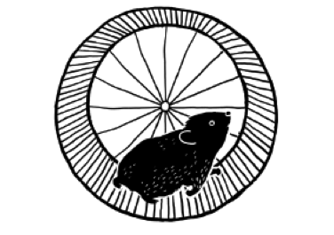

Da escassez à suficiência: em busca de uma permacultura para as organizações sociais
31 de Outubro de 2016 às 07:00
Veja se você se identifica com esta situação:
- Você trabalha numa organização social que precisa captar recursos para manter suas atividades, mas percebe que seus esforços geram resultados sempre insuficientes. Ano após ano, sua organização precisa crescer e ampliar suas metas, mas parece que estamos sempre correndo muito e que nunca chegamos lá;
- Na sua organização, as pessoas ganham mal (ou têm relações de trabalho precárias) e se sentem constantemente ameaçadas pela instabilidade dos projetos. Você se percebe distante daquela “chama” que te levou a atuar por uma causa;
- Os doadores individuais já não respondem da mesma forma às nossas solicitações ou não temos doadores individuais e nem sabemos por onde começar;
- Você já visitou mais de 100 empresas no último ano e parece que seu discurso não tem ressonância para o meio empresarial. Na volta de cada reunião, você tem uma sensação de que ninguém se importa com a causa que você defende e que as empresas e os empresários são insensíveis e egoístas;
- Como captador de recursos, você é cobrado por resultados, mas se sente só e desconectado do resto da organização, distante da liderança e da área de programas, e percebe que os resultados na captação de recursos precisam ser parte de um esforço integrado;
Parece que você está numa daquelas rodas de ratos, que não acabam nunca e que você nunca sai do lugar, certo?

E se fosse possível sair dessa roda e criar um novo ciclo? E se este ciclo produzisse integração, não dependência? Um ciclo onde os recursos não são desperdiçados e são utilizados em sua plenitude? Um ciclo que traga suficiência, ao invés de sobrevivência? Um ciclo onde você se sinta forte, confiante, íntegro e conectado com os demais?
Não sou um profundo conhecedor do conceito, mas achei que podemos nos inspirar na permacultura, um conceito que nasceu nos anos 70, por iniciativa de 2 ecologistas australianos, observando o modo de vida dos aborígenes, totalmente integrados com a natureza. Seus conceitos são aplicados principalmente na agricultura, mas podem ser considerados em diversas áreas do conhecimento. Segundo seus criadores, Permacultura é a utilização de uma forma sistêmica de pensar e conceber princípios ecológicos que podem ser usados para projetar, criar, gerir e melhorar todos os esforços realizados por indivíduos, famílias e comunidades no sentido de um futuro sustentável.
Olhando para alguns dos princípios da permacultura, organizei recomendações práticas para organizações sociais:
Cuide das pessoas (um dos 3 pilares da Permacultura)
O primeiro e mais importante recurso que você precisa captar e otimizar são os talentos que trabalham na sua organização. Organizações que se importam com as pessoas e conseguem viver uma coerência de valores, dentro e fora, são organizações mais vivas e expressivas. Esse vídeo da Organization Unbound mostra isso de maneira primorosa. Outra referência interessante sobre esse tema é o novo livro da Beth Kanter (consultora americana para organizações sociais). O livro chama-se “The Happy Healthy Nonprofit”, que defende a tese de que estimular o cuidado com o bem estar das pessoas melhora sua produtividade e amplia o impacto da organização onde você trabalha.
Crie um modelo de financiamento, não um plano de captação de recursos
Nell Edignton, do Social Velocity, defende (e eu concordo) que organizações sociais precisam ultrapassar o conceito de pensarem apenas em planos de captação de recursos para considerar modelos de financiamento de suas causas, que incluam vendas de serviços e produtos, parcerias corporativas (que podem considerar doações, prestação de serviços, parcerias comerciais e patrocínios), doações individuais, convênios governamentais, subvenções de Fundações Nacionais e Internacionais etc. Explore todas as alternativas possíveis para gerar receitas para sua organização. Uma organização sem fins lucrativos não pode distribuir seu excedente, mas pode e deve gerar excedente. A permacultura fala de “captar e armazenar energia”, que pode ser necessária em momentos de crise. Apesar de não ser adequado a qualquer organização, há alternativas de geração de renda ou negócios de impacto, que podem abrir perspectivas de captação de investimentos via empréstimos ou fundos de private equity. Para saber mais sobre o assunto, considere ler “Captação de Recursos para startups e empresas de Impacto”, do Marco Gorini e Haroldo da Gama Torres.
Tente resolver o problema das pessoas e das empresas, ofereça recursos
No modelo tradicional de captação de recursos, sua organização tem necessidades e precisa buscar recursos para atende-las. Nesse modelo “extrativista”, sua organização e a comunidade no entorno são coisas separadas, distintas. Com o mundo cada vez mais transparente e complexo, as barreiras entre dentro e fora tendem a desaparecer. Mais do que tentar convencer as pessoas de que seu trabalho é importante, tente interagir com elas e entender como se tornar relevante, resolvendo os problemas dos outros, oferecendo recursos que você já tem – como conhecimento, espaços físicos, experiências etc. Procure observar quem já está próximo de você e interaja, construindo diálogos e relacionamentos que sejam bons para você, para a comunidade e para seu potencial investidor. Nos princípios da permacultura, fala-se de “observar e interagir”.
Favoreça a integração interna e externa
“Integrar ao invés de segregar” é o que fala a permacultura. Integração é palavra de ordem no Século XXI. Tanto olhando para dentro das organizações, ao pensarmos na integração entre a área de captação de recursos e de programas, quanto para fora, ao pensar na integração da sua organização com outras ONGs, empresas e governo para gerar mudança. Nesse vídeo, Ricardo Guimarães (Thymus Branding) fala, de maneira simples, sobre como nossas organizações devem agir como sistemas vivos e estimular a interdependência.
Fazer a transição para um ciclo de suficiência/abundância não é uma tarefa fácil, uma vez que nossa forma de ver o mundo e interagir com ele é toda construída a partir de um paradigma de escassez. No entanto, a transição é necessária, diria até que será uma questão de sobrevivência.
Se você quiser continuar essa conversa, deixe seus comentários aqui abaixo ou escreva para mim @ rodrigo@mobilizaconsultoria.com.br.
Rodrigo Alvarez é Sócio Proprietário da Mobiliza. Administrador de Empresas, com Especialização em Fundraising pela Indiana Fundraising School, formação em Processos de Desenvolvimento pelo PROFIDES/Instituto Fonte e em Pedagogia Social pela Associação Brasileira de Pedagogia Social de Base Antroposófica. Atua há 20 anos com gestão e captação de recursos. Foi um dos fundadores da ABCR – Associação Brasileira de Captadores de Recursos e é membro do Conselho Consultivo do Rogare – Centro de estudos internacional que pesquisa, entre outras coisas, sobre o futuro da captação de recursos no mundo.
Publicado por
Notícias mais populares
Gestão
Em agosto de 2017, a revista ÉPOCA e o Instituto Doar divulgaram a primeira ediç&...
Contexto e tendências
Criado para tornar mais transparentes as parcerias entre a administração públic...
Profissional captador
A captação de recursos é fundamental para a sustentabilidade de uma organiza&cc...